A first-year design portfolio documenting how my understanding of
engineering design evolved through reflection, CTMFs, iteration,
and teamwork across multiple projects.
Below is my Praxis II Personal Statement from the start of Praxis II
(click on the video to watch my original position statement).
At the beginning of the course, I defined engineering design as the act of
"intentionally creating and refining solutions to solve specific needs”
while under constraints, stakeholder needs, and the actual uses. In that
statement, I focused a lot on my values, gratefulness, patience, and making
decisions, that I could stand by without any regrets, and how they have
shaped my definition at the beginning of the course. I still believe that
those values are important, but my understanding of engineering design has
become more grounded through actually working on engineering projects with
the CTMFs learned in Praxis I and II. After revisiting the video, my original
definition seems a bit too broad and generic. As I worked in a new team and
faced actual design challenges, my definition has shifted from simply
"working carefully within constraint,” to learning how to move between FDCR
and the discipline of choosing what to care about most when everything
cannot be optimized at once. However, I still obtain and care about those
values from my original definition, but I have refined them so it is more
precise and better reflects how I understand the process currently.
My revised definition of engineering design could be stated as follows:
Engineering design is the process of making informed and justified
decisions to develop practical solutions, by moving between analysis,
iteration, and teamwork under constraints.
Team: Terry Fu, Declan Chan, Navneet SaxenaMaterial: 32" x 40" x 0.05" matboardTools: hand calculations, Python, SolidWorks, Opticutter
The first engineering design project I will introduce is the bridge project in the first year of EngSci's cumulative assessment that must be completed at the end of the year. In this project, my teammate (Terry Fu, Declan Chan, Navneet Saxena) and we had to design a bridge using a rectangular sheet of matboard of 32’’ x 40’’ x 0.05’’, and two tubes of contact cement. Our design process involved both analytical and physical work. We began with a structural analysis of an initial design and using hand calculations and python to generate the shear force, bending moment, and factor of safety envelopes across the full span of the bridge. We also used SolidWorks to model the bridge geometry and Opticutter to optimize how pieces would be cut out from the matboard (see Figure 1 and 2). We did not simply just build one bridge and hope for the best; instead we used our own money, bought the exact same material the TA’s gave us and constructed a prototype. By building and testing the prototype, we figured that the reason for failure was due to the shear at the splice. Hence, we went through multiple design iterations, including changing the diagram's placements, increasing the cross-section, and strengthening the splice region. During the testing of the prototype, we carried close to 1000N before failing at the splice, which gave us valuable information before we committed to the final build.
What was interesting about this project isn’t only because it’s the only hands-on project we did in CIV, but also how iterative this project really was. After the prototype testing, we identified splice weakness and shear related buckling to be the major reason why the bridge failed, leading us to revise diaphragms, increase cross-section height, and strengthen the splice region. Our team also explored different heights cross-section through python analysis by Terry Fu, which suggested that it could reduce the displacement, but we later returned to a rectangular beam because more complex geometry was too difficult and time consuming to build. This connects back to my definition of engineering design that it’s not only about what seems the most optimized theory, but also about what could be built in real life, under real constraints of time, material, and the people.
This project was also introduced in my position statement at the beginning of the semester, however I would like to introduce this project again, and how my perspective has changed in this project. In the original statement, I emphasized patience and careful decision making, and that mindset was definitely valuable. But the bridge project taught me that patience in engineering is not just slowing down, it is also about staying with the process long enough such that as more evidence approaches, it changes how we would approach the problem. For example, our team initially explored a variable height cross-section because python showed it could reduce displacement, but we later returned to a rectangular beam because more complex geometry was too time consuming for the amount of time given to us. This decision has taught me that engineering design is not only about the theory, but also about what can realistically be built out well, with the tools, time, and the people available.
CIV Bridge figures
1 / 6
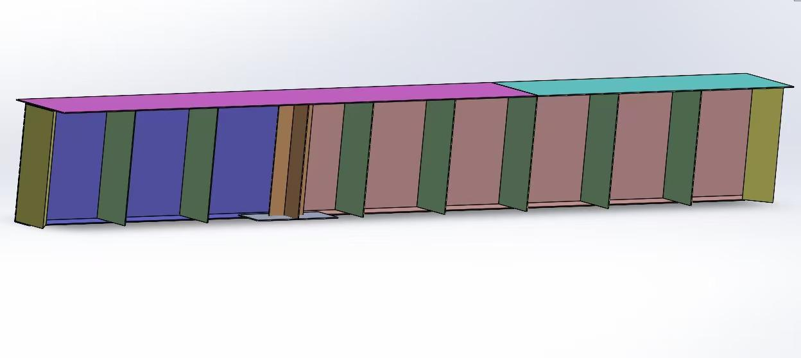
Figure 1: Inside view of the completed bridge. Yellow indicates
triangular diaphragms, green indicates vertical diaphragms, and
orange indicates the cross diaphragm.
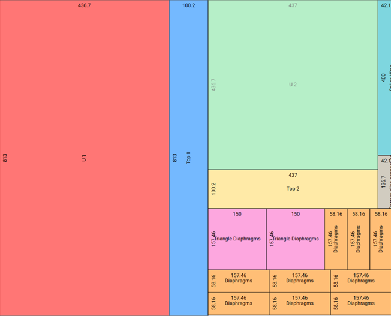
Figure 2: Opticutter layout used to optimize the matboard cutting
template.
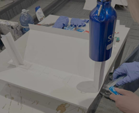
Bridge iteration work near the splice region during the
prototyping stage.
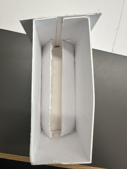
Figure 4: Inner view of the triangular diaphragms after
iteration.
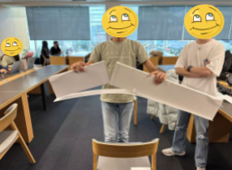
Figure 5: Failure of the prototype at the splice under nearly
1000 N of load.
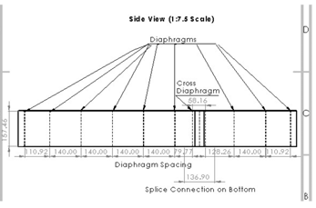
Figure 6: Side-view engineering sketch of the bridge design.
CTMF 1
NGO
Related FDCR: Framing, Diverging, Converging
Definition
NGO, also Need, Goals, and Objectives Table in praxis terms is a tool that enables us to turn a design problem to something more clear and measurable. The definition of each term is stated as follows:
NeedsWhat stakeholder require or care about
GoalBroad things the design should achieve
Objectivespecific measurable target to meet goal
What: Evidence of Use
NGO was one of the most important CTMF’s during our framing, diverging and convergings stages. Though we did not explicitly name them that while working. Back then, the CIV102 project was also driven by the same NGO logic, where we had a clear goal, and every design change had to be justified against a goal.
The use of NGO is clearly shown in our design iterations. For example, one objective was to increase the bridge’s failure load while reducing its vulnerability to buckle and splice failure. The objective has led us to several decision makings: we increased the cross section height to improve the second moment of area and replaced the rectangular diaphragms with the triangular supports where the shear was highest (see Figure 4), widened the splice wrap, and added an “X” support near the splice because those changes directly improved how the bridge resisted bending, shear, and buckling. These choices were strictly tied to whether the bridge would better meet the objectives.
So what: Lesson Learnt
The biggest lesson I’ve taken from NGOs is that they helped prevent me from drifting towards random ideas or I should say, ideas that may intuitively fit the design. The NGO tables allow the team to keep the design anchored to something measurable, this helps avoid any intuition led decisions. This CTMF also has also validated that my previous statement of Engineering Design was not incorrect but just requires some revising, that engineering design is not about generating solutions, but about making informed and justifiable decisions under constraints.
Now What: Future Action
In future design work, I think NGO will be especially important whenever I am tempted to take action based on intuition. They help remind me to ask: What is the actual objective here, and will it really help us move forward? Moving forward, I want to become more disciplined about using NGOs explicitly in the design process so that the decisions are not only thoughtful but also justified.
CTMF 2
Prototype
Related FDCR: Diverging, Converging, Representing
Definition
In Praxis, prototypes are described as models whose purpose is to generate or communicate information about a design concept.
What: Evidence of Use
Our team did not only build the prototype just because we wanted to show we are making progress. But we built it to test how the actual bridge might fail. The prototype was physically tested by loading it with two of our group members standing on it until failure, weighing approximately 1000N in load (see Figure 5). This testing revealed that the splice failed first and that shear near the sides was causing buckling. The failure directly informed our later design changes, including the improved triangular diaphragm and stronger splice-related supports (see Figure 4).
So/Now What: Lesson learned and Future Action
This prototyping step is important because it changed how I have encouraged me to rethink about failure. Initially, I thought that failed design as something that reflects poor decision making. But, this project has shown me that failure can be one of the most useful pieces of evidence. It allows us to stop and only focus on the analytical side and pay attention to what the material and joints were actually doing and deliberate, and prototypes give that patience a purpose: they allow us to slow down, test the assumptions, and fix the mistakes that led to the failure of the prototype. In the future, I do not want to only rely on analysis in future projects. Prototyping is something I would continue to keep using, because it helps reduce overconfidence and makes the design process more honest.
CTMF 3
Perry Model of Intellectual and Ethical Development
Related FDCR: All of FDCR
Definition
The Perry model in praxis terms is a way of describing the growth or how one person’s thinking develops when dealing with the knowledge, uncertainty, and decision making. In Praxis it is summarized as:
Dualismyou think there is one right and one wrong answer
Multiplicityyou start to realize there can be multiple answers and perspectives
Relativismyou understand that answers need to be judged in context, using evidence
Commitmentyou choose a direction to stand by, while also respecting other viewpoints
What: Evidence of Use
The Perry Model is one of the CTMF that helped explain how my thinking changed during the project. From Dualism to Multiplicity, then to Relativism, and finally ends at Commitment. Looking back, I can see parts of that movement in how I approach the bridge project. Initially, I think I had a dualistic mindset: I was still looking for the “best” bridge design, almost as if there was one correct answer and our job was to find it. During this stage, I tended to see good engineering as finding the best answers through analysis and theory. However, the project made it much harder to think that way.
As the project progressed, me and the team went through several designs (the different diaphragms, cross-sections, and splice structures), and I started to see that there was not one single “right” answer. Some options looked stronger in analysis, like the different height trapezoidal cross-section, but they were harder to build accurately and effectively. Other options were simpler and less optimized on paper, but much easier to construct well in reality. That pushed me away to thinking on my original definition of engineering design of just finding the best theoretical solution. Instead, I had to weigh different factors like the time and materials. This is very similar to the movement of Perry from Dualism toward Relativism, where multiple possibilities exist.
So/Now What: What I liked/learned and Future Action
What I liked about Perry’s model is that it feels a lot more about personal growth rather than something measurable. It helps me explain that the bridge project did not just teach me how to build a better structure or to become a better engineer, but also taught me valuable lessons like how to think more honestly. I still value patience and careful decision making, but engineering design isn’t really waiting for an one right answer but also about learning when I have enough evidence to commit to a direction. That is also something I still want to improve on in the future project: being more comfortable making justifiable decisions even though it’s not the perfect solution.
Problem: roommate sleep-study conflictRecommended concept: bed dome coverKey tools: Morph Chart, Pugh Chart, Proxy Testing
The second project I would like to introduce is the Design Report and Alpha Release design we constructed during Praxis I: Bed dome cover for UofT Chestnut Residence double rooms (see Figure 7.a). The opportunity came from a very everyday problem: two roommates sharing a room often have different sleep and study schedules, so one person may need the darkness to fall asleep while the other needs the illuminance to study (see Figure 7.b). In our design report, we reframed the opportunity such that the sleeping roommate is treated as the primary stakeholder, and we focus on reducing the light disturbances without creating permanent changes to the room or making the design difficult to use. Before converging to a final design concept, we explored four concepts: the bed dome cover, lamp covering, a retractable room divider, and a bathroom studying extension. Through multiple rounds of convergence, we recommended and constructed the bed dome cover as the overall design.
We also identified key design decisions behind the recommendation, such as using polypropylene fabric to block light, using clamp to attach the cover to the bed frame without permanent damage, and using a foldable hinge mechanism to reduce the effort and save space.
I included the project because it shows an earlier stage in how I learned to connect stakeholder needs, diverge, converge, and construct the prototype with evidence behind it. During diverging, we used tools like the classical brainstorming and morph chart, which helped expand the design space. During Converging, we compared the four concepts we had with more serious evidence that backed up our recommended design. What was the most interesting about this project was the proxy testing. Due to the material constraints we have as Praxis I students, our team used a smartphone's ambient light sensor (lightmeter app) in a real Chestnut double room at night (a sketch up model of Chestnut Double room by Jiaxu Zhao) , with some rough functional prototypes to help create realistic comparative evidences for direct and indirect illuminance (Primary Requirement). The assignment itself has taught me to justify my decisions in why the recommended design was the best option, explain key concepts, and show the design has been checked off against the requirements, ECs, and prototype.
I think this project connects strongly to my revised position of the definition of engineering design because this design has shown how important it is to be aware of moving carefully from one stage to another. This project has shown me that engineering design is about knowing how to narrow the concepts down in a way that is evidence based but still realistic. That is why I think this project deserves a place in my portfolio: it reflects the earlier but essential stages in how I started learning to connect the design process, design product, and my own position as an engineer.
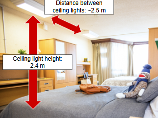
Figure 7.a: A double room at the U of T Chestnut Residence.
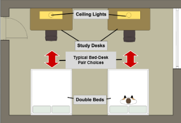
Figure 7.b: Simplified schematic of the double room showing the
positions of the lights, desks, and beds.
CTMF 1
Morphological Chart
Related FDCR: Framing, Diverging
Definition
Morph chart is a diverging tool that is used to generate ideas by breaking a problem into its main function and listing different ways each function could be achieved. By combining different options across different functions, it helps create a wider range of possible concepts.
What: Evidence of Use
I especially like this CTMF because I could clearly see what it changed in our project. For example, in our initial diverging session we used classical brainstorming only to give us a limited design space, mainly the lamp cover and room divider (see Figure 8). It was only after using the morphological chart — and focusing on key functions like “focus making sleep areas dark” and “Easy to Maintain” — that more creative concepts began to appear, including ideas like bathroom studying extension and night vision goggles (see Figure 9, 10 and 11). By allowing ideas like this, we put the sleeper in priority and dismissed the important factors like comfort for the studier.
What felt useful about this CTMF is that it allowed us to stop thinking only in terms of recognizable products that would lead us in a rabbit hole of anchoring bias, and start thinking in terms of functions (see Figure 9). This transformation matters a lot. Before using it, our ideas were too attached to obvious solutions, like the lamp cover or the retractable room covering.For me, this was the one time I really understood why diverging tools matter.
Figure 9: Morphological chart from the second round of
divergence, featuring concepts such as night vision goggles,
sleeping under the bed, and a bathroom study extension.
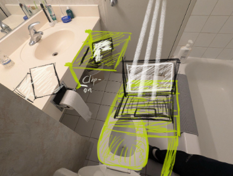
Figure 10: Bird's-eye view of the bathroom study extension
concept.
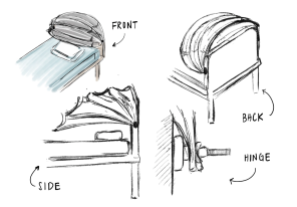
Figure 11: Sketch of the foldable bed dome cover with a wire
frame supporting a light-blocking fabric cover.
So/Now What: What I learnt and Future Action
I’ve also learnt that this CTMF fits me personally because I can sometimes settle too early on an idea that seems reasonable enough. The Morph Chart worked against that habit. It allowed me to slow down and look at the problem structurally, which led to concepts that I probably would not have thought of on my own. In future projects, I would want to continue to use this again whenever I notice my team is converging too early or stuck on anchoring bias. At the same time, I think I could improve in how deliberately I use it. In this project, I mostly experienced the value after the fact. Next time, I want to be more aware of when a project needs that kind of structured divergence early on.
CTMF 2
Pugh Chart
Related FDCR: Converging, Representing
Definition
Pugh chart in Praxis terms is a converging or a comparison tool used to evaluate multiple design concepts against a set of criteria by comparing each one to a reference design. It helps to see which concepts perform better than the other in a set of criteria.
What: Evidence of Use
In this project, the Pugh chart is the most important converging CTMF. By the time we reached that stage, the challenge was no longer generating concepts, it was deciding which one we could actually stand behind. During the converging process, we included both the Measurement Matrix and the Pugh Chart using bed dome cover as datum (Table 1 and 2). The measurement matrix showed that the bed dome cover achieved 2.9 lux direct illuminance, 1.2 lux indirect illuminance, a setup time of 3-5 seconds, and an estimated weight of 920 g (see Table 1). Compared to other concepts, however, it did not dominate every category, but it performed strongly overall and remained much lighter and more practical than the retractable room divider, while being more effective at reducing light than the lamp cover.
What I liked about the Pugh chart was that it made the project feel a lot more disciplined. Without it would not be easy to choose the bed cover simply just because it intuitively felt balanced or visually convincing. By combining it with the measurement matrix, it allowed the team to easily see the differences between the different design concepts.
Table 1: Measurement Matrix
Concept
EC 1.1 Direct illuminance (lux)
EC 1.2 Indirect illuminance (lux)
EC 3.1 Setup time per use
EC 3.2 Weight
Bed Dome Cover
2.9
1.2
3 to 5 s
920 g
Lamp Cover
7
1.7
0 s
400 g
Room Divider
2.4
1.4
~5 s
4960 g
Bathroom Study Extension
0.5 maximum
0
~5 s
2700 g
Table 2: Pugh Chart with the Bed Dome Cover as datum
Evaluation criteria
Lamp Cover
Bed Dome Cover
Retractable Room Divider
Bathroom Study Extension
EC 1.1 Direct illuminance: the lower the better
-
Datum
+
+
EC 1.2 Indirect illuminance: the lower the better
-
Datum
-
+
EC 3.1 Setup time: the lower the better
+
Datum
-
-
EC 4.2 Weight: the lighter the better
+
Datum
-
-
Total
2+
0
2-
2-
EC 1.1 and EC 1.2 were treated as high-priority criteria because
they were most relevant to the sleeping roommate's expectations.
So What: What I learnt
Another thing I found useful about the pugh chart is that it also helped acknowledge the limitations: the bathroom studying extension was actually ranked very strongly on some prioritized metrics, but its comfort was not properly evaluated, which affected how confidently it could be recommended. This taught me that convergence tools like the pugh chart are only as good as the evidence behind them. A chart can help structure judgement, but it does not replace judgement.
Now What: Future Action
At the same time, this project has shown me where I still need improvement as it directly correlates to my revised definition of engineering design of making justifiable decisions: I want to get better at noticing what is missing from a convergence tool, not just what is included. In this case, comfort became a gap. This is a good reminder in the future since a design decision may require double checking as it may still be incomplete even though it seems to be well supported.
CTMF 3
Proxy Testing
Related FDCR: Converging, Representing
Definition
Proxy Testing in Praxis terms is a stand-in test that approximates the real world condition.
What: Evidence of Use
During the process of selecting and constructing the recommended design, we initiated a proxy test that approximated the real situation as closely as we could. This included using a smartphone ambient light sensor app (called Lightmeter) in a darkened Chestnut double room, then pointing the sensor from the sleeper’s head position toward the opposite ceiling light, the ceiling above, and the nearest wall (see Figure 14). That gave us a workable way to compare direct and indirect illuminance across two selected concepts (see Figure 12 and 13).
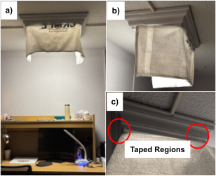
Figure 13: Front and side views of the flexible lamp-cover
prototype used for proxy testing, including the taped
attachment region.
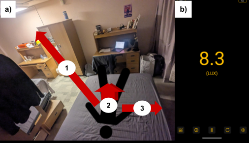
Figure 14: Testing setup for direct and indirect illuminance
measurements using the LightMeter app.
So What: What I learnt
What I learnt through proxy testing is that good design work doesn’t require the perfect test method, and building a test that is reasonable, and useful with resources we have. This was evident in this project since we acknowledged that professional tools like integrating spheres or goniophotometer (a standardized tool to measure luminance) were not realistically available in praxis I, so we had to create a proxy test instead. I think this was one of the most important lessons for me that engineering design is about making thoughtful approximations which requires making justifiable decisions through evidence, and less about waiting for the ideal condition.
Now What: Future Action
In the future, I definitely want to keep using proxy testing when ideal verification is not realistic. But I also want to improve on how I conduct those tests. In this project, fortunately, our proxy tests worked, but I think it’s also important to ask: What important behavior might have been missed? I think this would support our claim with a much stronger justification during the representation stage.
Team 7: Grant Liang, Sean Ding, Nathan Xia, Junye ZhouRFP: variable swim resistanceFocus: concept development + meaningful representation
The last project that I will introduce is the Beta Release work for the variable swim resistance RFP. This project connects strongly to my current definition of engineering design as a process of making informed decisions through analysis, iteration, testing, and teamwork under real constraints. What made this project different from the first two is that it sat in an uncertain stage of engineering design. It’s unlike the Design Report, where we would recommend one final design. Instead, we were trying to show that we had credible concepts, where we would represent them in a meaningful way, and we also began to think more seriously about how they would be verified. Our team, Team 7, consisting of me and other three team members, Grant Liang, Sean Ding, Nathan Xia, developed four main concepts that were showcased during beta release: a zipline, a parachute, a spool-based resistance system inspired by a rowing machine, and skirt based water drag concept (see Figure 15,16,17 and 18). These concepts were represented at different levels of fidelity: a physical prototype and mathematical model for the zipline, created a 3D cad model of the parachute with animation, printed a 3D model of the spool system using fusion, and sketched the skirt concept.
I also think this project is important because it made the design process feel a lot less linear than what I had previously imagined. For example, in CIV102 Bridge, the design path felt centered to improving one design toward one measurable goal. In the Beta release, things were a lot more open and free. We had to keep multiple concepts alive at once, compare them, and represent all of them differently depending on what each concept needed. I think this design has helped me become more comfortable with that stage of design.
This project connects strongly to how my definition of engineering design has changed over time. Earlier this year, I thought engineering design was mostly about being intentional and working carefully within constraints. Though I still believe that, the Beta release has helped me add a new understanding to it. It showed me that being intentional doesn’t always mean being certain. In this project, intention usually came only from how we compare ideas during converging stages, how we justified why some reason concept deserved further development, and how we chose to represent each one meaningfully even before final verification. This is the reason why engineering design is not only about refining on chosen solutions, but also knowing how to move responsibly through the process and constraints.
This project has also helped me grow in a more personal way – which will be introduced in detail in CTMF 3: PIAA model. After ending Praxis I, I noticed that I usually felt more comfortable when a project has clearer boundaries and a more direct path forward. Beta challenged it. It forced us to stay engaged even when the design space was still open, and it forced me to rely on structured comparison and thoughtful representation rather than on the comfort of having one direction. Because of this, I think this project is worth a place in this portfolio. It reflected a stage of my development where I became more comfortable with uncertainties, more aware of the values of representation, and more able to see engineering design as a process of judgment as much as a process of creation.
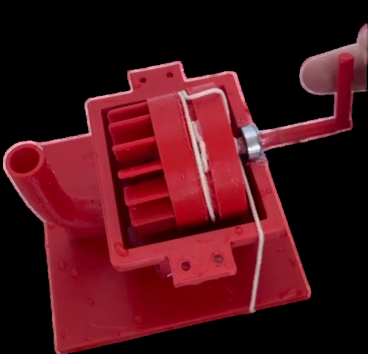
Figure 15: Zipline capstan concept.
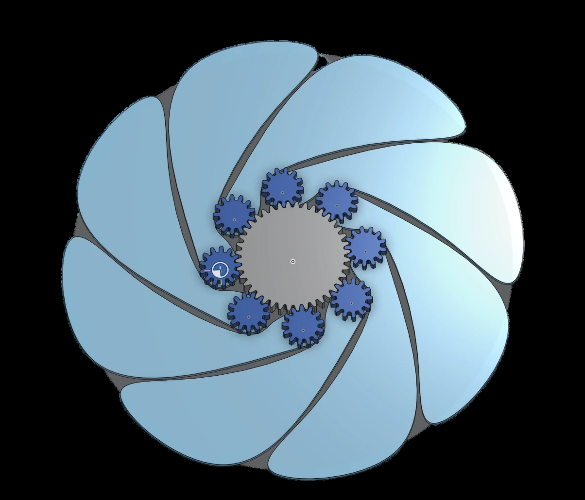
Figure 16: Parachute functionality concept.
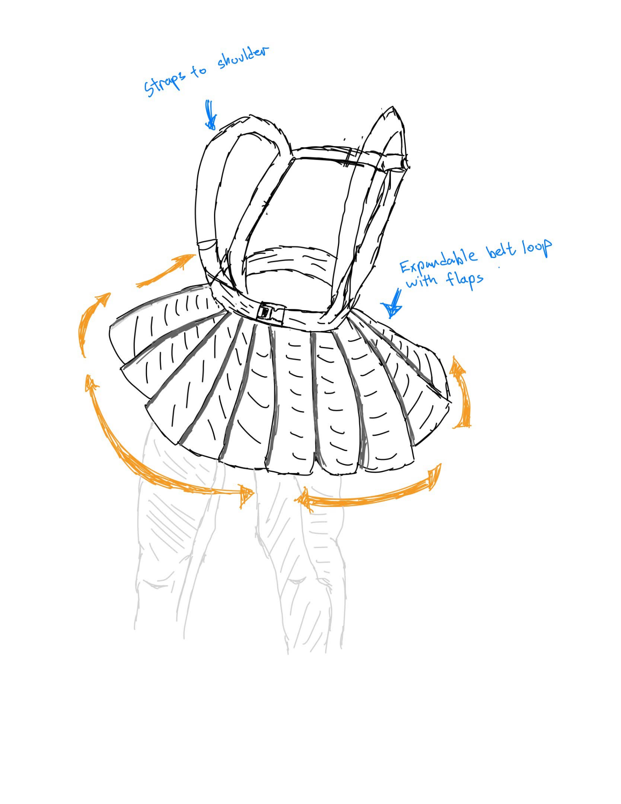
Figure 17: Skirt concept.
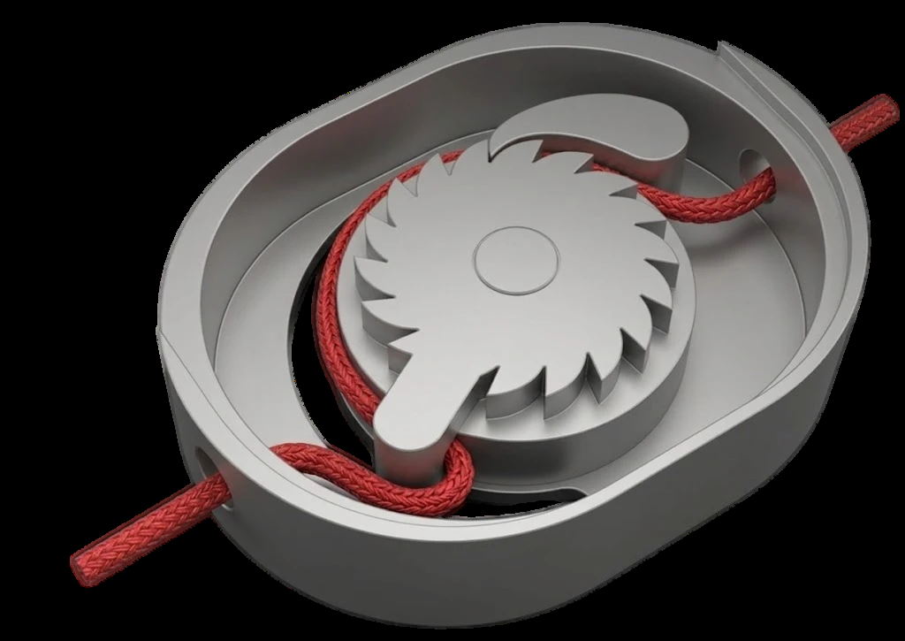
Figure 18: Rowing-machine-inspired concept.
CTMF 1
Biomimicry
Related FDCR: Framing, Diverging
Definition
Biomimicry in praxis is a diverging approach where you look at how nature solves a problem and use that as inspiration for your own design.
What: Evidence of Use
Biomimicry is one of the most interesting diverging tools in this project because it helped us move beyond the most obvious resistance ideas. Swim resistance equipment could easily have stayed limited to familiar drag based concepts, but biomimicry helped push the team into thinking about forms and mechanisms that exist in nature and how they might translate into motion in water. During our diverging session, we asked a simple question: how do animals in nature slow down in water? That opened up more possibilities than expected. For example, we looked at how fishes extend their pectoral fins from their sides to create drag, how jellyfish have a parachute-like shape that interacts with water resistance, and how some animals reduce speed by stopping active propulsion and entering a passive glide. (see Figure 19)
What’s interesting about this diverging tool is that it gave the team more specific directions to explore. It seems different from the Morph chart that we used during the Praxis I Alpha Release, since it’s a combination of different functions. Instead, we started asking more detailed questions, like whether drag should come from expanding outward, from catching water like a parachute, or from a shape that changes how water flows around the body. These resulted in one of our two concepts: the parachute and skirt (see Figure 16 and 17).
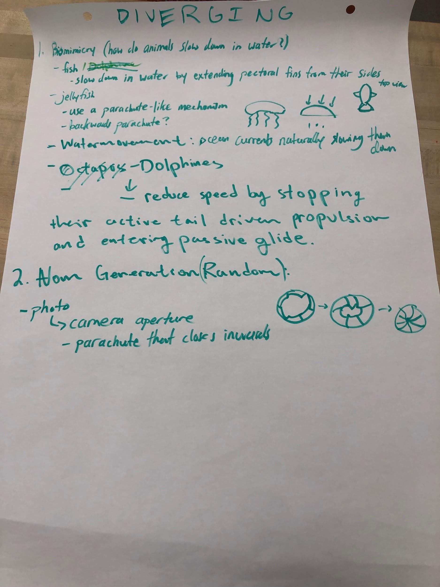
Figure 19: Biomimicry diverging work done during tutorial
sessions on paper.
So/Now What: What I learnt and Future Action
I think biomimicry fits me well because I sometimes need something more concrete to push my thinking in a less obvious direction. If I only start from products that already exist, it would be too close to the familiar, eventually trapping us in a rabbit hole like anchoring bias. Biomimicry helped me break the habit a little. It allowed me to generate ideas based on the nature around me, and their way of movement. This connects to my position in engineering design because I value being intentional about how new ideas are developed, rather than choosing the first familiar solution that comes to mind. Biomimicry looks at the movement and functions more carefully, and allows me to use that as a starting point for more thoughtful decisions. In future projects, I was thinking about a combination of the morph chart with something similar to biomimicry, so that I can both break the problem into its key functions and use natural movement or behavior to push those functions in more creative directions.
CTMF 2
Pairwise Comparison
Related FDCR: Converging, Representing
Definition
Pairwise comparison in Praxis term is a converging tool used to evaluate design concepts by comparing them two at a time against a set of requirements.
What: Evidence of Use
For this project, I think this tool was one of the most useful ways to converge because it helped us compare concepts more directly. We initially had seven concepts, but by debating them against each concept using Toulmin's model deductively to debate between two different concepts, while supported with a set of Requirements and ECs. We ended up removing 3 design concepts due to factors like safety and their functionality. By using pairwise comparison, it made the process feel more manageable by letting us compare concepts one against another instead of trying to rank all seven all the time (see Figure 20)
We chose pairwise comparison instead of Pugh Chart in this project because at the Beta release stage, our concepts were still at very different levels of development. Some were still more tangible and detailed, like the zipline prototype, while others were still represented more conceptually, like the skirt sketch. Because of that, a full pugh chart of 7 different designs seemed slightly premature. Pairwise comparison fitted this project because it allowed us to compare two ideas at a time, which made it easier to discuss arguments. It also worked well with our requirements and ECs, and with Toulmin's model of argument since we could debate one comparison at a time and justify the reasoning more clearly instead of forcing a full ranking.
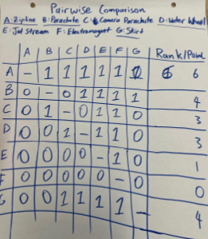
Figure 20: Pairwise comparison converging session completed on
paper.
So What: What I learnt
I value decisions that I can actually stand behind, without any regrets. Pairwise comparison allowed me to slow the process down in a good way. Rather than just jumping in too quickly to whichever concept looked more polished and visually appealing, it gave us a structure of making smaller and more thoughtful arguments where we could debate against two concepts. This also connects back to my position on the revised definition of engineering design, because I see good design as less about choosing what seems best intuitively, but about making informed decisions that can be justified clearly.
Now What: Future Action
In future projects, I would want to keep using pairwise comparison, but also incorporate measurement matrices so that the Requirements and ECs are organized more clearly. I think this would help me stay grounded in the design criteria throughout the comparison process.
CTMF 3
PIAA Model
Related FDCR: All of FDCR
Definition
PIAA is a model for decision making and design thinking. It could be summarized as follows:
PerceivingPerceiving situation through senses
InterpretingInterpreting the meaning
AssessingAssessing the possible responses
ActingActing on a chosen direction
What: Evidence of Use
During Beta Release, the PIAA model helped capture the way our team moved through an uncertain stage of design. At this stage, we were not choosing one final design yet, so the work depended a lot on how we perceived useful patterns, interpreted what they meant for resistance in water, assessed which ideas are the best, and then acted by building or representing those concepts in different ways. My usage of PIAA during Beta Release could be summarized below:
Perceived the resistance could come from several different mechanism;
Interpreted those into concepts like the zipline, parachute, spool system, and skirt;
Assessed them through comparison using tools like pairwise and toulmins;
Acted by representing each concept during the date of Beta Release.
SoWhat: What I learnt
I learned from PIAA that good decisions do not happen all at once. In the beta release, I saw that our team had to go through multiple cycles of PIAA. This correlates back to my values in my original position statement: Patience. PIAA is the evidence that shows me that I can move through the process step by step and let each stage shape the next one.
Now what: Future Action
In the future, I would like to use PIAA more intentionally. Not only in an engineering context, but also in my everyday life. I think it would help me pause and ask myself what I am actually doing at the moment: am I still perceiving and interpreting or am I trying to answer the question too quickly? Another thing I want to improve on is to not skip too fast into action because I want progress to feel much more evident or visible. Using PIAA more consciously would help me make decisions that feel more grounded.
References
Junye Zhou. Process Analysis Student Submission. University of
Toronto course submission.
Junye Zhou, Declan Chan, Navneet Saxena, Terry Fu. CIV102 Bridge
Project Student Submission. University of Toronto course submission.
Junye Zhou, Jiaxu Zhao, Jocelyn, Audrey Lin. Design Report Student
Submission. University of Toronto course submission.
The University of Edinburgh. "What? So What? Now What?" Reflectors'
Toolkit.
University of Toronto. Alpha Release course material.
University of Toronto. Beta Release course material.
University of Toronto. Showcase course material.
University of Toronto. What, So What, Now What model for process
analysis.